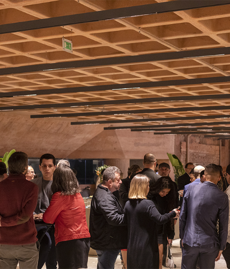

Eventos
Cinema no Museu - 1ª Edição

 16.18.23_35936ad9.jpg)
Foto: Vincent Carelli, Vídeo nas Aldeias.
Data e horário: 5 de abril, às 15h
Local: Auditório do Museu do Ipiranga
Carga horária: 4h
Inscrição gratuita: De 17 a 31 de março. Clique aqui.
Recursos de acessibilidade: Legenda e audiodescrição.
Haverá emissão de certificado de participação aos interessados.
Debatedores convidados: Ariel Ortega Kuaray Poty e Patrícia Ferreira Pará YxapyMediador: David Ribeiro
O Museu do Ipiranga convida para o lançamento do Cinema no Museu, um programa semestral que trará exibições de filmes e documentários seguidos de debates com seus realizadores.
A primeira edição ocorrerá no dia 5/4, às 15h, no auditório, com entrada gratuita, e será dedicada ao filme Tava, a Casa de Pedra, produzido pela ONG Vídeo nas Aldeias, fundada pelo indigenista Vincent Carelli.
Participarão da sessão a realizadora audiovisual Patrícia Ferreira Pará Yxapy e o cineasta Ariel Ortega Kuaray Poty, que assinam a direção do documentário.
O filme apresenta diversas dimensões do pensamento indígena em torno das chamadas Ruínas das Missões Jesuíticas dos Guarani, reconhecidas como Patrimônio Mundial pela Unesco, localizadas nos territórios brasileiro e argentino. O documentário recupera o direito dos povos indígenas à autodeterminação e o poder de contar suas próprias histórias.
PARTICIPE!